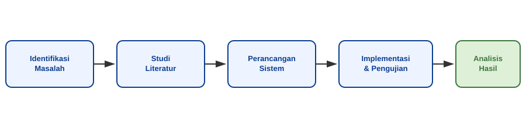

Daftar Publikasi Penelitian
| No. | Judul Publikasi | Penulis | Jenis Publikasi | Tahun | Status | |
|---|---|---|---|---|---|---|
| Penulis Utama | Anggota | |||||
| 1 | Optimasi Konsumsi Daya pada Jaringan Sensor IoT Berbasis Deep Learning | Dr. Andi Saputra, M.Kom. | Budi Hartono; Citra Lestari | Jurnal Internasional (Q2) | 2023 | Terbit |
| 2 | Klasifikasi Citra Satelit untuk Deteksi Perubahan Lahan menggunakan CNN | Dr. Rina Marlina, M.T. | Fajar Nugraha | Prosiding Seminar Internasional | 2024 | Terbit |
| 3 | Ekstensi Model CNN untuk Deteksi Perubahan Lahan pada Data Multitemporal | Fajar Nugraha; Dewi Anggraini | Jurnal Nasional Terakreditasi | 2024 | Terbit | |
| 4 | Sistem Rekomendasi Adaptif Berbasis NLP untuk E-Learning | Dr. Andi Saputra, M.Kom. | Sari Wulandari | Jurnal Internasional (Q1) | 2025 | Proses Review |
| Total Publikasi Terindeks Scopus | 3 Publikasi | |||||
| Jumlah Total Publikasi Tercatat | 4 | Periode 2023–2025 | ||||
Bidang Keahlian
-
Kecerdasan Buatan dan Pembelajaran Mesin
- Deep Learning untuk Klasifikasi Citra
- Natural Language Processing (NLP)
- Sistem Rekomendasi Berbasis Data
-
Rekayasa Perangkat Lunak
- Arsitektur Perangkat Lunak Berbasis Microservices
- Pengujian Perangkat Lunak Otomatis
-
Internet of Things dan Sistem Tertanam
- Desain Sensor Jaringan Nirkabel
- Optimasi Konsumsi Daya Perangkat
- Integrasi Sistem Cloud dan Edge Computing
Metodologi Riset

Deskripsi Riset
Fokus riset kelompok kami adalah pengembangan sistem cerdas untuk pemantauan lingkungan berbasis Internet of Things (IoT). Sistem dirancang agar dapat beroperasi pada kondisi suhu ekstrem hingga 45°C dengan efisiensi daya tinggi. Selain itu, algoritma yang dikembangkan mampu memproses data ketika nilai sensor < 10 unit maupun ketika terjadi lonjakan signifikan, sehingga akurasi deteksi anomali dapat dipertahankan. Kolaborasi riset ini melibatkan bidang Rekayasa Perangkat Lunak & Kecerdasan Buatan, dengan dukungan dana hibah internal maupun eksternal.